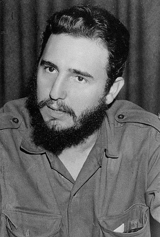
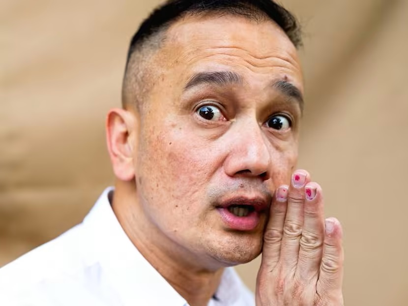
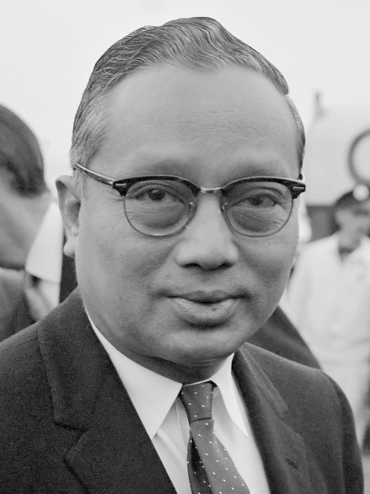
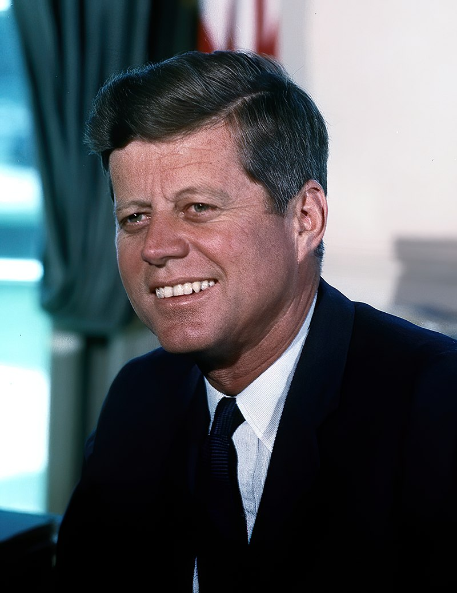

Barack Obama served as the 44th President of the United States.
His story is the American story — values from the heartland,
a middle-class upbringing in a strong family, hard work and education
as the means of getting ahead, and the conviction that a life so
blessed should be lived in service to others.

Fidel Castro
Ideologically a Marxist–Leninist and Cuban nationalist, he also served as the first secretary of the Communist Party of Cuba from 1965 until 2011. Under his administration, Cuba became a one-party communist state; industry and business were nationalized, and socialist reforms were implemented throughout society.

Gurmit Singh
Lieutenant General Gurmit Singh[2] PVSM, UYSM, AVSM, VSM (born 1 February 1956) was a Deputy Chief Staff of the Indian Army from 2014 to 2016. Currently, he is the 8th Governor of Uttarakhand since 2021.[3][4] Singh retired on 31 January 2016 after nearly four decades in the army, where he was deputy chief of Army Staff, and adjutant general and corps commander of strategic XV Corps that overlooks the Line of Control in Kashmir. He has also worked in border issues and counter-terrorism.
Sharh Ruk Khan
Shah Rukh Khan born 2 November 1965, also known by the initialism SRK, is an Indian actor and film producer who works in Hindi cinema.
Referred to in the media as the "Baadshah of Bollywood" and "King Khan", he has appeared in more than 100 films, and earned numerous accolades,
including 14 Filmfare Awards. He has been awarded the Padma Shri by the Government of India, as well as the Order of Arts and Letters and Legion of Honour by the Government of France. Khan has a significant following in Asia and the Indian diaspora worldwide.
In terms of audience size and income, several media outlets have described him as one of the most successful film stars in the world. Many of his films thematise Indian national identity and connections with diaspora communities, or gender, racial, social and religious differences and grievances.

U Thant
U Thant was a Burmese diplomat and the third secretary-general of the United Nations from 1961 to 1971, the first non-Scandinavian to hold the position. He held the office for a record 10 years and one month.
Thant, the eldest of four sons, was born in Pantanaw, Colonial Burma, to a moderately-wealthy family of landowners and rice merchants. His father Po Hnit, who had been educated in Calcutta, was the only person in the town who could communicate well in English. He was a founding member of the Burma Research Society and had helped establish The Sun (Thuriya) newspaper in Rangoon. Although his family members were ethnic Bamars and devout Buddhists, Thant's father, according to Thant Myint-U (U Thant's grandson), had distant ancestors who were "people from both India and China, Buddhists and Muslims, as well as Shans and Mons". He hoped that all his four sons would each earn a degree. His other sons, Khant, Thaung, and Tin Maung went on to become politicians and scholars.

John F Kennedy
John Fitzgerald Kennedy (May 29, 1917 – November 22, 1963), often referred to as JFK, was an American politician who served as the 35th president of the United States from 1961 until his assassination in 1963. He was the youngest person elected president.[a] Kennedy served at the height of the Cold War, and the majority of his foreign policy concerned relations with the Soviet Union and Cuba. A Democrat, Kennedy represented Massachusetts in both houses of the United States Congress prior to his presidency.
Alumni Activity
YST Lunchtime Concert: Wednesday Noon Recitals
02 Nov 2024
Researcher Unbound+: Cultural Transplantation: The Writing of Classical Chinese Poetry in Colonial Singapore (1887‒1945)
03 Nov 2024
A Systemic Design Approach for Future-Proof Cities
03 Nov 2024
Kris Foundation Viola Recital: Sangjin Kim
04 Nov 2024
A Date with DBS: A Walk in the Wetlands
05 Nov 2024